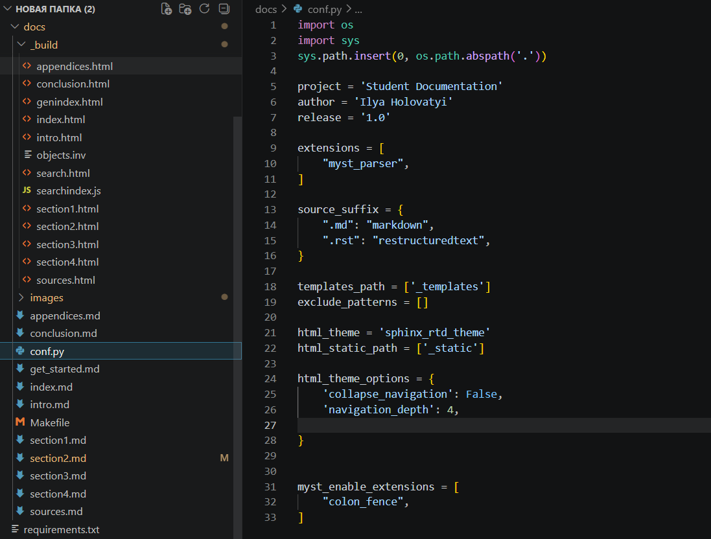
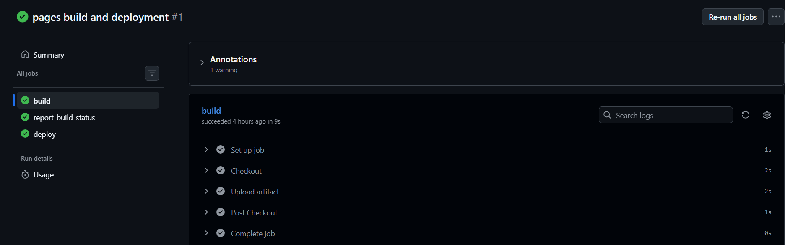

Розділ 3
ПРАКТИЧНА РЕАЛІЗАЦІЯ ТА НАЛАШТУВАННЯ АВТОМАТИЗАЦІЇ
3.1. Структурування навчальної документації та налаштування conf.py
Практична реалізація системи автоматизації починається з формування структури проєкту, яка забезпечує розділення програмного коду та документації. У межах роботи документація розміщується в окремій директорії docs, що містить усі вихідні Markdown-файли, конфігураційні файли Sphinx та статичні ресурси. Такий підхід спрощує підтримку проєкту, зменшує навігаційну складність репозиторію та забезпечує масштабованість структури 41.
Головною точкою входу документації є файл index.md, у якому формується загальна структура матеріалів за допомогою директиви toctree. Перехід від reStructuredText до Markdown реалізовано через MyST Parser, що дозволило уніфікувати формат документації та спростити редагування матеріалів.
Центральним конфігураційним файлом системи є conf.py, у якому визначаються параметри збірки документації, метадані проєкту, список розширень і тема оформлення. Для коректної роботи генерації документації до sys.path додається шлях до кореня проєкту, що дозволяє Sphinx знаходити Python-модулі під час автоматичного аналізу коду 42.
У конфігурації підключено основні розширення:
• myst_parser — підтримка Markdown та MyST;
• sphinx.ext.autodoc — автоматичне формування документації з docstring;
• sphinx.ext.napoleon — підтримка Google та NumPy style docstring;
• sphinx.ext.viewcode — відображення вихідного коду у документації.
Використання цих розширень забезпечує автоматичну синхронізацію між кодом і документацією, а також дає можливість перегляду програмної реалізації без переходу до репозиторію 43.
{kind=link}

Рис.3.1-Структурування навчальної документації та налаштування conf.py
Для візуального оформлення використано тему sphinx_rtd_theme, яка забезпечує адаптивний інтерфейс, бокову навігацію та зручне відображення документації на різних пристроях. Додаткові параметри теми налаштовуються через html_theme_options, що дозволяє змінювати поведінку меню навігації та структуру відображення сторінок 44.
У проєкті також налаштовано html_static_path, який використовується для підключення власних стилів CSS, зображень та інших статичних ресурсів. Це дозволяє додавати скріншоти, логотипи та додаткове стилістичне оформлення документації. Для інтеграції з зовнішніми джерелами документації використовується механізм intersphinx, який налаштовується через словник intersphinx_mapping. Це дозволяє створювати автоматичні посилання на офіційну документацію Python та сторонніх бібліотек, що покращує навігацію та усуває дублювання інформації 45.
Окремо налаштовано параметри:
• language = ‘uk’ — локалізація документації українською мовою;
• exclude_patterns — виключення службових файлів, кешу та віртуального середовища;
• templates_path — підключення власних шаблонів генерації.
Локальна розробка документації виконується у віртуальному середовищі .venv, а попередній перегляд реалізовано через sphinx-autobuild, що забезпечує автоматичне оновлення сторінок після змін у Markdown-файлах.
Перевірка коректності документації виконується локально перед відправленням змін у репозиторій. Це дозволяє виявити помилки посилань, відсутні файли або конфігураційні проблеми до запуску CI/CD-процесу в GitHub Actions.
У результаті сформовано структуроване середовище документації на базі Sphinx, Markdown та MyST Parser, підготовлене до автоматичної збірки й публікації через GitHub Actions та GitHub Pages. Якісне налаштування структури й конфігурації є основою стабільної роботи автоматизованого конвеєра документації 46.
3.2. Розробка сценарію (Workflow) для GitHub Actions
Розробка автоматизованого сценарію починається зі створення YAML-файлу в каталозі .github/workflows, який описує процес збирання та публікації документації. У файлі задається назва workflow, а також події запуску: push для основної гілки та pull_request для перевірки змін перед злиттям. Такий підхід дозволяє автоматизувати контроль документації після кожного оновлення. Як зазначає Денис Михайлов 47, коректне налаштування тригерів є основою ефективного CI/CD процесу.
Після визначення тригерів описується job, що виконується на віртуальному середовищі ubuntu-latest. Першим кроком є actions/checkout, який завантажує вміст репозиторію до середовища виконання. Далі використовується actions/setup-python для встановлення необхідної версії Python та підготовки середовища збірки. У посібнику Андрія Семенова 48 підкреслюється, що ізоляція середовища дозволяє уникнути конфліктів залежностей та підвищує стабільність автоматизації.
Наступним етапом є встановлення залежностей через файл requirements.txt. Workflow виконує команду pip install -r requirements.txt, встановлюючи Sphinx, тему оформлення, MyST Parser та інші необхідні розширення. За потреби додатково встановлюється сам пакет проєкту, що дозволяє autodoc імпортувати модулі та генерувати API-документацію. Як зазначає Віталій Кравченко 49, автоматичне керування залежностями знижує ризик помилок під час збірки.
Збірка документації виконується командою:
• sphinx-build -b html docs docs/_build/html
У результаті формується каталог зі статичними HTML-файлами, готовими до публікації. За потреби workflow може запускатися в суворому режимі з обробкою попереджень як помилок, що підвищує якість документації. Максим Дорофєєв [50] наголошує, що контроль попереджень є важливим елементом автоматизованої перевірки якості.

Рис.3.2-Розробка сценарію (Workflow) для GitHub Actions
Після успішної збірки виконується публікація документації через GitHub Pages. Для цього workflow використовує стандартні механізми GitHub Actions для завантаження артефактів і деплою згенерованих HTML-файлів. У результаті кожен успішний запуск автоматично оновлює вебсайт документації без ручного втручання.
Для оптимізації швидкодії workflow використовується кешування пакетів Python. Це дозволяє повторно використовувати встановлені залежності між запусками та зменшити час виконання сценарію. Як підкреслює Олексій Васильєв 51, кешування є важливим інструментом оптимізації ресурсів у CI/CD.
У межах сценарію також можуть використовуватися додаткові перевірки, зокрема контроль структури документації, перевірка збірки та аналіз посилань. Це дозволяє виявляти синтаксичні помилки, відсутні файли або некоректні внутрішні переходи ще до публікації документації.
Workflow підтримує умовне виконання кроків залежно від гілки репозиторію. Наприклад, деплой виконується лише для основної гілки, тоді як для інших запускається тільки перевірка збірки. Такий підхід забезпечує стабільність публічної версії сайту та спрощує тестування змін.
Після налаштування workflow його перевірка виконується через інтерфейс GitHub Actions, де доступні журнали виконання, статуси кроків і повідомлення про помилки. Це дозволяє швидко локалізувати проблеми та вдосконалювати сценарій у процесі розробки.
У результаті реалізовано повністю автоматизований конвеєр підготовки та публікації документації: від завантаження репозиторію до розгортання на GitHub Pages. Workflow об’єднує Sphinx, GitHub Actions і GitHub Pages в єдину систему автоматизації документації. Як зазначає Віктор Тарасов 52, автоматизація є ключовим етапом підвищення ефективності технічних процесів.
3.3. Інтеграція перевірки синтаксису (linting) та перевірки посилань (linkcheck) у CI-процес
Завершальним етапом налаштування системи автоматизації є інтеграція перевірок якості документації у CI-процес. У межах проєкту реалізовано автоматичний linting Markdown-файлів, перевірку структури документації та контроль працездатності посилань під час виконання workflow у GitHub Actions. Це дозволяє виявляти помилки ще до публікації документації та підтримувати стабільну якість контенту. У праці Леоніда Костенка щодо автоматизації контролю якості технічних текстів 53 підкреслюється, що синтаксичний контроль є важливою складовою професійного документування.
Оскільки документація повністю переведена на Markdown із використанням MyST Parser, перевірка виконується для .md-файлів, які використовуються Sphinx під час збирання HTML-документації. Автоматичний аналіз дозволяє виявляти помилки форматування, неправильну структуру заголовків, некоректні блоки коду та інші проблеми розмітки. Це забезпечує однаковий стиль оформлення документації незалежно від кількості авторів проєкту.
Перевірка посилань реалізована через вбудований режим linkcheck у Sphinx. Під час виконання workflow система автоматично перевіряє внутрішні та зовнішні URL-адреси, використані в документації. У разі виявлення недоступних або застарілих ресурсів збірка завершується зі статусом помилки. Такий підхід дозволяє уникнути публікації документації з «битими» посиланнями та підтримувати актуальність інформації. Дослідження Олександра Іванова щодо надійності розподілених баз знань 54 підтверджує важливість автоматичної валідації зв’язків у цифрових системах.
Для інтеграції перевірок у GitHub Actions до YAML-конфігурації workflow були додані окремі етапи, які виконуються перед фінальним збиранням HTML-документації. У разі помилки linting або linkcheck workflow автоматично зупиняється зі статусом failure. Це створює механізм контролю, який не дозволяє публікувати технічно некоректну документацію. Логи виконання містять інформацію про файл і рядок помилки, що спрощує процес виправлення. У посібнику Дмитра Бондаренка 55 зазначається, що автоматична перевірка під час CI-збирання є ефективним способом підтримки дисципліни розробки.
{kind=link}

Рис. 3.3 — Моніторинг та візуалізація автоматизованого конвеєру збірки
Додатково у проєкті використовується перевірка Python-коду, пов’язаного з генерацією документації. Це дозволяє контролювати коректність docstrings, які використовуються Sphinx для автоматичного формування API-довідки. Автоматичний аналіз допомагає підтримувати єдиний стиль опису функцій, параметрів та значень, що повертаються. Як зазначає Марина Соколова у роботах про стандартизацію коду 56, якість документації безпосередньо залежить від якості коментарів у вихідному коді.
Перевагою інтегрованого linting є автоматизація більшості рутинних перевірок. Автор документації отримує швидкий зворотний зв’язок без необхідності ручного тестування структури документації чи працездатності посилань. Це дозволяє зосередитися на змісті документації та пришвидшує процес розробки. У посібнику Павла Федорова 57 автоматичне форматування та перевірка визначаються як важлива складова сучасного процесу розробки програмного забезпечення.
Під час налаштування linkcheck враховуються можливі тимчасові збої зовнішніх ресурсів. Для цього у конфігурації Sphinx можуть задаватися параметри повторних спроб підключення та час очікування відповіді сервера. Також можливе виключення окремих доменів із перевірки. Це підвищує стабільність CI-процесу та зменшує кількість помилкових зупинок workflow. Подібні аспекти мережевої взаємодії розглядаються у працях Миколи Вороніна 58.
Результати перевірок відображаються безпосередньо в інтерфейсі GitHub Actions, що спрощує аналіз помилок під час роботи з Pull Request. Автор та рецензент можуть швидко визначити проблемні фрагменти документації без детального перегляду повних логів виконання. Такий підхід наближує навчальний процес до практик, які використовуються у професійній розробці програмного забезпечення.
Додатково система може бути розширена перевіркою правопису за допомогою sphinxcontrib-spelling. Це дозволяє автоматично виявляти орфографічні помилки та описки у технічній документації. За потреби можуть використовуватись спеціалізовані словники термінів для конкретної предметної області.
Інтеграція linting та linkcheck у CI/CD-процес забезпечує автоматичний контроль якості документації на всіх етапах її підготовки та публікації. Поєднання Sphinx, MyST Parser та GitHub Actions дозволило реалізувати систему Documentation as Code, у якій документація проходить автоматичну перевірку, збірку та публікацію через GitHub Pages. Практична реалізація підтвердила ефективність такого підходу для створення сучасної навчальної технічної документації.